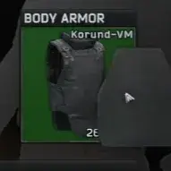

Mod
LMSP - Let Me Switch Plates
- Downloads
- 3,573
- Favourites
- 46
- Mod lists
- 57
Description
Allows you to add or remove plates from your equipped armor without needing to throw it on the floor or in your bag. Because that sucks.
Installation
Drag and drop contents of the download into your root SPT directory
Version
1.0.0
SPT ~4.0
Fika: compatible
3,573 downloads2.8 KB
Initial Release
VirusTotal: report 1